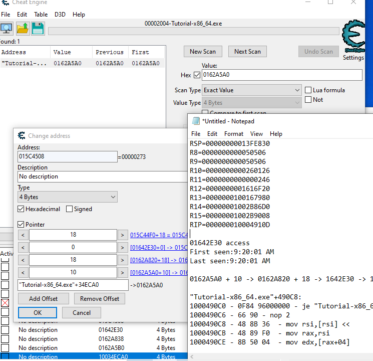

6 1 CE tutorial
cheat engine 튜토리얼을 연습해보자
작성자: kkongnyang2 작성일: 2025-07-14
CE tutorial 1~5
주소 탐색
newscan 누르기
창에 initial 값 입력 후 firstscan 누르기
값 변화시키기
창에 second 값 입력 후 nextscan 누르기
목록 추려지면 클릭해서 아래 작업바에 내리기
거기서 값 조작
코드 무효화
what writes 들어가서 디스어셈블러 보기. 해당 줄 코드를 replace with code that does nothing으로 바꾸면 체력값을 쓰는 코드가 무효화돼서 작동 안한다.
빌드와 런 이해하기
빌드 = 소스 파일을 실행 파일로 컴파일. 단 한번.
런 = 그 실행 파일이 메모리에 올라와서 프로세스로 돌아감.
빌드는 소스 파일의 모든 함수를 어셈블리어로 만들고 .text와 .data 등 섹션을 나눠 저장한다. 어차피 전부 가상주소긴 해도 함수 간의 오프셋은 완벽하게 고정된다. 그렇기에 press_button() 함수에서 hp_edit() 함수로, struct player 데이터로, 이 사이에는 정해진 거리가 있어 그렇게 호출이 가능하다. 그걸 오프셋이라 부른다.
# foo() 안에서 bar() 호출 (x86-64 PIE)
call [rip + 0x34] ; ← 0x34는 bar 까지의 거리
# 만약 진짜 외부에 있으면?(라이브러리 등)
# 외부 심볼 bar() 호출
call QWORD PTR [rip + .got.plt.bar] ; GOT 슬롯에 patch된 절대주소를 읽음
0x000055f4_9c8a0000 ── [텍스트] ← PIE 베이스 (ASLR로 매 실행마다 변동)
├─ [rodata]
├─ [data] ← g_player
├─ [bss]
├─ (heap) ← malloc() 구조체들 … ↑ 성장
0x00007f3d_40000000 ── [libc.so] ← 공유 라이브러리 베이스
├─ 기타 .so …
├─ (익명 mmap/JIT 영역)
0x00007ffe_fffe0000 ── [stack] ← 스레드마다 새로, 위에서 ↓ 성장
우리가 이걸 런하면 새로 순차적으로 코드들이 생기는 게 아니라 이 빌드 실행 파일 안에서 위치만 옮겨가며 각 줄을 cpu로 작동시키는 것이다. 모든 행동은 이미 완벽하게 규율로 지정되어 있다. 하드웨어 인터럽트가 커널 단에서 작동되면 그게 어느 주소로 향하고 그 다음은 어디로 정해져 있는지의 문제이다. 물론 인터럽트에 의해 새로 할당되는 데이터들도 있긴 하다. 이것들은 힙, 스택들로 쌓인다.
즉, 빌드는 완벽히 고정된 퍼즐, 런은 베이스 주소를 기반으로 그 퍼즐 전체를 그대로 올리고, 사용자 인터럽트에 의해 추가 데이터가 더 할당되는 것.
┌─[빌드 단계]─────────────────────────────────────────┐
│ ① 모든 코드·전역·상수 → 한 퍼즐처럼 “세그먼트 + 오프셋” 고정 │
│ (.text / .rodata / .data / .bss) │
└──────────────────────────────────────────────────────────────┘
↓ execve()
┌─[런타임: 프로세스 시작]──────────────────────────────┐
│ ② 커널·ld.so가 베이스 주소(ASLR)만 정해 mmap │
│ ──> “퍼즐” 전체를 한 번에 가상공간에 올림 │
└────────────────────────────────────────────────────┘
↓ 게임 진행
┌─[런타임: 동적 동작]────────────────────────────────┐
│ ③ 사용자 입력·네트워크 이벤트 등 → 힙/스택/mmap에 │
│ 새 객체·버퍼를 **필요할 때마다** 추가 │
└────────────────────────────────────────────────────┘
참고로 모든 프로세스들은 메모리 뒷부분에 커널을 공통으로 가지고 있다.
CE tutorial 6~9
게임 진행 도중 새 플레이어의 hp와 ammo를 어떻게 할당할까?
struct player *p = malloc(sizeof *p); // (1) rax ← 새 힙 주소
g_local_player = p; // (2) 코드가 전역 변수에 저장
이런 구조를 통해 할당한다. 따라서 우리는 플레이어 마다 값이 적힌 주소를 일일히 찾아다닐게 아니라, 저 할당하고 포인터하는 (베이스 주소 기준으로)고정된 진원지 자체를 찾아야 한다.
[game.bin+0x1BCF30] → 0x0000006002A000 (전역 포인터, 오프셋 고정)
│
├─ hp = *(+0x00)
├─ ammo= *(+0x04)
└─ pos = *(+0x08) …
우리는 저 값이 담긴 주소를 누가 access 하는지 진원지를 찾을 것이다. 튜토리얼에서 change value라는 버튼을 눌러서 값을 할당하고 쓰기 명령을 내렸다 했을 때 이를 따라가보자.
먼저 용어 정리.
베이스 주소는 런할때 정해지는 영점 조절 같은 것이다. game.bin
포인터는 값 부분에 수치를 입력하는게 아니라 주소를 입력하는 4바이트(64비트 os면 8바이트)다. 0x0000006002A000라는 주소값을 적어준다.
오프셋은 고정된 퍼즐에서의 거리를 뜻한다. +뒤에 적힌 걸 의미한다.
만약 빌드 때 이미 위치가 정해진 정적 데이터면 포인터를 쓸 필요도 없이 거리로 바로 읽으면 된다.
하향식 (값에서부터 체인 따라가기)
Find out what writes to this address -> 쓰기 타입 명령만
Find out what accesses this address -> 모든 타입 명령(참조 등등)
# 값이 담긴 주소 탐색
# 15C4508. what writes
# 체력값 16F를 15C44F0 + 18 위치에 적으라는 코드 발견
"Tutorial-x86_64.exe"+4910A:
10004910A - 89 46 18 - mov [rsi+18],eax <<
RAX=000000000000016F
RSI=00000000015C44F0
# 15C44F0를 포인팅 하는 주소 탐색
# 1642E30. what access
# 1642E30 위치에 있던 값 15C44F0을 불러오는 코드 발견
"Tutorial-x86_64.exe"+490C8:
1000490C8 - 48 8B 36 - mov rsi,[rsi] <<
RAX=0000000001642E30
RSI=00000000015C44F0
# 1642E30을 포인팅 하는 주소 탐색
# 162A838. what access
# 162A820 + 18 위치에 있던 값 1642E30을 불러오는 코드 발견
"Tutorial-x86_64.exe"+4907C:
10004907C - 48 8B 76 18 - mov rsi,[rsi+18] <<
RAX=000000000162A820
RSI=0000000001642E30
# 162A820을 포인팅 하는 주소 탐색
# 162A5B0. what access
# 162A5A0 + 10 위치에 있던 값 162A820을 불러오는 코드 발견
"Tutorial-x86_64.exe"+49034:
100049034 - 48 8B 76 10 - mov rsi,[rsi+10] <<
RAX=000000000162A5A0
RSI=000000000162A820
# 162A5A0을 포인팅 하는 주소 탐색
# "tutorial-x86_64.exe"+34ECA0.
10034ECA0 -> 162A5A0 + 10 -> 162A820 + 18 -> 1642E30 -> 15C44F0 + 18 -> 16F
# change address 누르고 tutorial-x86_64.exe 부터 체인 연결해주면 됨

코드 인젝션
디스어셈블리에서 ctrl+A 눌러 어셈블러 창 열기. code injection을 클릭하고 원하는 부분의 내용 수정
상향식 (메모리 전수 스캔)
pointer scan for this address 자동 스캐너 이용.
값 주소를 찾은 후 우클 누르고 해당 스캐너 클릭. max level은 보통 5로 , max offset은 0x3FF 정도로 설정. .ptr 파일에 후보 리스트가 저장되면 게임 재실행 후 pointer scan 누르고 rescan memory 하면 정말 static인 후보만 남는다. 그것들을 작업바로 옮긴다.